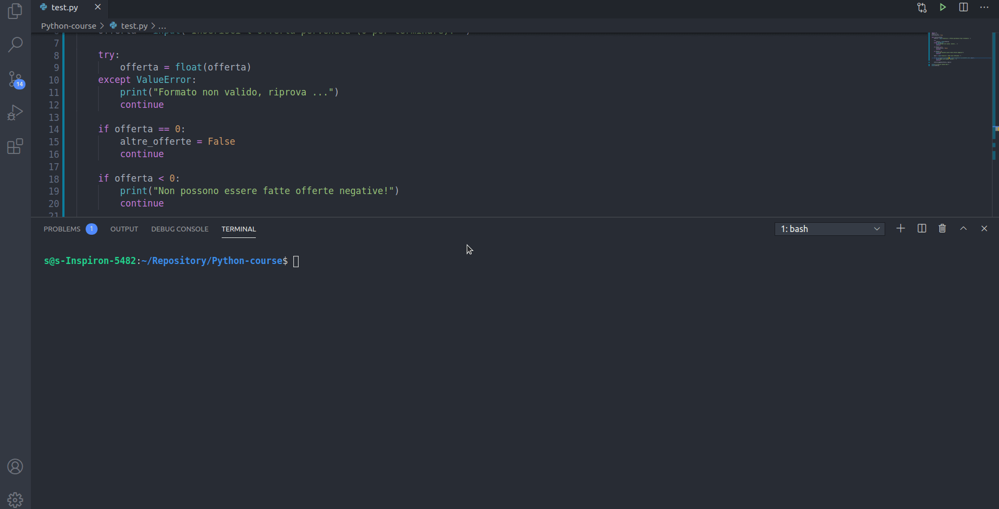

Python
Lezione 01
Prerequisiti
Conoscenza di un linguaggio qualsiasi OOP come C++ o Javascript
Corso Python
Python è un linguaggio di programmazione di più "alto livello" rispetto alla maggior parte degli altri linguaggi, orientato a oggetti, adatto, tra gli altri usi, a sviluppare applicazioni distribuite, scripting, computazione numerica e system testing.
Ideato da Guido van Rossum all'inizio degli anni novanta, il nome fu scelto per la passione dello stesso inventore verso i Monty Python e per la loro serie televisiva Monty Python's Flying Circus ed è spesso paragonato a Ruby, Tcl, Perl, JavaScript, Visual Basic o Scheme
Installazione e setup
Collegati alla pagina ufficiale di Python e installa la versione per il tuo sistema operativo.
Installazione e setup - Linux
Per i sistemi su base linux è sufficiente digitare i seguenti comandi:
sudo apt-get install python3
sudo apt-get install python3-pip
Nota: Il modulo pip di Python permette la gestione e l'installazione di moduli esterni
Per verificare la corretta installazione dell'interprete python digitare da terminale python3. In questo modo apriremo inoltre la shell interattiva di python in cui sarà possibile inserire direttamente del codice ed avere una risposta simultanea

Configurazione di un IDE
Un ottimo ambiente di sviluppo per Python è Pycharm.
Per questo corso ho preferito non utilizzare un IDE specifico come Pycharm ma uno con un target più ad uso generale come Visual Studio Code con l'ausilio di un'estensione che possa supportare gli emmet (abbreviazioni intelligenti) per il linguaggio python e opzioni per il debug del codice. L'estension che ho installato si chiama Python ed è quella che riporto nell'immagine animata qua sotto.

Lezione 02
Primo script
Ogni file python ha un'estensione .py.
Per l'esecuzione di uno script python è possibile lanciare il file creato con l'estensione .py (esempio test.py) direttamente dal terminale digitando il comando per l'invocazione dell'interprete python python3 ad esempio python3 test.py all'interno della cartella contenente il file test.py oppure attraverso l'estensione appena installata per VS code Run/Start Debugging
Ecco l'esecuzione del primo script python
print('ciao mondo')

Aggiunta di moduli
Per l'aggiunta di un modulo che rientra nella libreria standard python basta semplicemente digitare:
import <nomeModulo>
pip che permette la gestione e l'installazione dei moduli aggiuntivi python.
Supponiamo di voler scaricare il modulo PyPDF2 per la gestione dei PDF. Digitare da terminale
pip install PyPDF2
Qualora si avessero dubbi sul nome del modulo o sul comando esatto, niente paura, il browser ci è di supporto
 ù
ù
Lezione 03
Introduzione a webbrowser
Il seguente script aprirà una località su google.maps digitata come input dall'utente.
Utilizzeremo il comando input() che permette l'acquisizione dati da tastiera e la funzione open del modulo python webbrowser.
La funzione open permette di aprire un certo url specificato come parametro tra gli apici. Il parametro è quindi passato come una stringa e come tale valgono tutte le operazioni e i metodi applicabili su stringa tra cui l'operatore + utilizzato per concatenare due o più stringhe .
input(): consente l'acquisizione dati da tastiera dell'utente.webbrowser.open(myUrl): Apre l'indirizzo web specificato dal parametro myUrl. Il parametro specificato viene passato come stringa+: Operatore di concatenazione stringhe
Ecco lo script completo:
import webbrowser
destinazione = input()
webbrowser.open('https://www.google.com/maps' + '/place/' + destinazione)

E' possibile ridurre ancora il codice
import webbrowser
webbrowser.open('https://www.google.com/maps' + '/place/' + input())
Come rendo eseguibile un file python?
Linux
Aggiungere la seguente linea di codice in testa allo script:
#!/usr/bin/env python3
Ad esempio:
#!/usr/bin/env python3
import webbrowser
webbrowser.open('https://www.google.com/maps' + '/place/' + input())
E' sufficiente rendere il file eseguibile (all'interno delle proprietà del file sezione "permessi") e lanciarlo da terminale.

Commenti
# questo è un commento e verrà ignorato dall'interprete
print('ciao')
Lezione 04
Introduzione al modulo PyPDF2
Il seguente script tratterà l'elaborazione di file pdf. Saremo in grado quindi di generare un file pdf con nome predefinito "Output.pdf" che è la copia della prima pagina di un pdf con nome "input.pdf" ricevuto in input
Faremo uso del modulo aggiuntivo PyPDF2 da installare da terminale tramite il comando pip install PyPDF2
Utilizzeremo le funzioni standard Python di apertuta e chiusura file:
- open(myFile, mode): apre un file e lo restituisce come oggetto.
- myfile indica il nome comprensivo del path del file da aprire
- mode indica la modalità di apertura del file
- mode = "r" modalità lettura
- mode = "rb" modalità lettura binaria
- mode = "w" modalità scrittura
- mode = "wb" modalità scrittura binaria
- close(): chiude un file aperto. È necessario chiudere sempre i file aperti poichè in alcuni casi, a causa del buffering, le modifiche apportate a un file potrebbero non essere visualizzate finché non si chiude il file.
w3schools - Python open() Function
w3schools - Python close() Function
Del modulo aggiuntivo PyPDF2 utilizzeremo le classi:
- PdfFileReader(myPdf): Chiama il costruttore della classe PdfFileReader che inzializza in lettura il file oggetto pdf myPdf ricevuto come parametro e restituisce un'istanza della classe PdfFileReader
The PdfFileReader Class
Metodi
- getPage(pageNumber): restituisce una pagina in base al numero pageNumber passato come parametro
PdfFileWriter(): Chiama il costruttore della classe PdfFileWriter() che inizializza in scrittura un file oggetto pdf e restituisce un'istanza della classe PdfFileWriter()
The PdfFileWriter Class
MetodiaddPage(page): Aggiunge una pagina PDF, all'istanza della classe PdfFileWriter a cui si applica il metodo. La pagina viene solitamente acquisita da un'istanza di PdfFileReader.write(myPdf): Scrive (su disco, da ram a rom) la raccolta di pagine aggiunte a questo oggetto come file PDF, riceve come parametro l'oggetto pdf da scrivere, myPdf.
Nota: Le "funzioni/classi" di un modulo devono essere invocate sempre specificando il nome del modulo.
Esempio:
import PyPDF2
pdfInput = open("pdf/input.pdf", "rb")
#PyPDF2 è il nome del modulo, PdfFileReader è il nome della classe del modulo PyPDF2
reader1 = PyPDF2.PdfFileReader(pdfInput)
Script completo
import PyPDF2
#Apro il file <input.pdf> all'interno della cartella <pdf> in modalità lettura binaria
#Restituisco un oggetto all'interno della variabile <pdfInput>
pdfInput = open("pdf/input.pdf", "rb")
#Restituisco un'istanza della classe <PdfFileReader> all'interno della variabile <reader1>
reader1 = PyPDF2.PdfFileReader(pdfInput)
#apro un file <Output.pdf> all'interno della cartella <pdf> in modalità scrittura binaria
#Restituisco un oggetto all'interno della variabile <pdfOutput>
pdfOutput = open("pdf/Output.pdf", "wb")
#Restituisco un'istanza della classe <PyPDF2.PdfFileWriter> all'interno della variabile <writer1>
writer1 = PyPDF2.PdfFileWriter()
#Prelevo la pagina numero <0> e ritorno un oggetto pdf di una pagina all'interno della variabile <pag0>
pag0 = reader1.getPage(0)
#Aggiungo in coda pag0 all'istanza <writer1> (della classe PdfFileWriter)
#Ripeto l'operazione per tre volte
writer1.addPage(pag0)
writer1.addPage(pag0)
writer1.addPage(pag0)
#Scrittura su disco dell'istanza della classe <writer1> su <pdfOutput> l'oggetto in scrittura corrispondente a "Output.pdf"
writer1.write(pdfOutput)
#aChiudo i File
pdfInput.close()
pdfOutput.close()

Lezione 05
Costrutto condizionale if...else
Le istruzioni condizionali vengono utilizzate per eseguire un blocco di codice solo nel caso in cui una condizione risulti true o false
Sintassi costrutto if esteso:
if condition1:
#code 01
#..
elif condition2:
#code 02
#..
else:
#code 03
#..
Esempio:
print("Inserisci due numeri..)
primoValore = input()
secondoValore = input()
if a > b:
print("Il primo valore inserito, " + primoValore + " è maggiore del secondo valore inserito, " + secondoValore)
elif b > a:
print("Il secondo valore inserito, " + secondoValore + " è maggiore del primo valore inserito, " + primoValore)
else:
print("i due valori inseriti sono uguali")
Notare che per il costrutto if in python, la condition è priva di parentesi tonde ( ) comuni invece a molti altri linguaggi di programmazione; l'operatore : è usato come terminatore della condition e l'indentazione è necessaria per racchiudere la porzione di codice condizionato da if.
Lezione 06
Costrutto iterativo for
Un ciclo for viene utilizzato per iterare su una sequenza (che può essere una lista, una tupla, un dizionario, un insieme o una stringa).
È meno simile alla keyword for in altri linguaggi di programmazione e funziona più come un metodo iteratore che si trova in altri linguaggi di programmazione orientati agli oggetti.
Sintassi:
#Sintassi 1:
for target_list in expression_list:
#code
Esempio:
for numero in [1, 2, 3, 4, 5]:
print(numero*numero)
# 1
# 4
# 9
# 16
# 25
for frutto in ["banana", "mela", "pera"]:
print(frutto)
# banana
# mela
# pera
Indentazione Python
Il linguaggio python, a differenza di altri linguaggi come C/C++, Javascript .. Non utilizza delimitatori di blocco codice come { } ma si affida alla semplice indentazione. Rende quindi indispensabile l'uso di un buon editor di testo per evitare problemi di sintassi o semantica (in alcuni casi nemmeno troppo rari). Non utilizza neanche un terminatore di statement come il classico ; ma si affida al carattere a capo. L'interprete python comunque è in grado di rilevare errori sintattici di indentazione e segnalarlo.
range() Function
Per iterare un insieme di codice un numero di volte specificato, possiamo usare la funzione range ().
La funzione range (number) restituisce una sequenza di numeri, a partire da 0 per impostazione predefinita, incrementa di 1 (per impostazione predefinita) e termina con un numero specificato tramite il parametro number. In realtà termina con il numero number - 1.
La funzione range () può accettare 1, 2 o 3 parametri:
range(number): un parametro, genera una lista numerica incrementale nel range0 - number-1range(numberStart, numberEnd): due parametri, genera una lista numerica incrementale nel rangenumberStart - numberEnd-1range(numberStart, numberEnd, step): tre parametri, genera una lista numerica con incremento pari astepnel range massimonumberStart - numberEnd-1
w3schools - The range() Function
range(5) #[0, 1, 2, 3, 4]
range(1, 5) #[1, 2, 3, 4]
range(1, 5, 2) #[1, 3]
for target_list in range(number):
#code
# range(number) costruisce una lista da 0 a number-1
for numero in range(5):
print(numero*numero)
# 0
# 1
# 4
# 9
# 16
for numero in range(1, 5, 2):
print(numero)
# 1
# 3
Nel seguente esempio specifico alla funzione print() di non utilizzare il terminatore di default a capo rendendo nullo l'attributo end
print(end="")
Esempio:
for numero in range(5):
print(str(numero) + ":", end="")
print(numero*numero)
# 0:0
# 1:1
# 2:4
# 3:9
# 4:16
Lezione 07
PyPDF2 - Copia PDF
Il seguente script prende in input un pdf "input.pdf" e ne produce una copia sul file "Output.pdf"
Faremo uso della proprietà della classe PdfFileReader:
- numPages: Restituisce il numero delle pagine del file pdf dell'istanza (della classe PdfFileReader) si cui si legge la proprietà
import PyPDF2
pdfInput = open("pdf/input.pdf", "rb")
reader1 = PyPDF2.PdfFileReader(pdfInput)
pdfOutput = open("pdf/Output.pdf", "wb")
writer1 = PyPDF2.PdfFileWriter()
#Copia delle pagine dell'oggetto (classe) pdf <reader1> nell'oggetto (classe) pdf <writer1>
for numeroPagina in range(reader1.numPages):
page = reader1.getPage(numeroPagina)
writer1.addPage(page)
writer1.write(pdfOutput)
#aChiudo i File
pdfInput.close()
pdfOutput.close()

PyPDF2 - Merge All pdf
Il seguente script unisce tutti i file pdf presenti nella root directory salvandoli con un nome stabilito dall'utente.
Faremo uso di:
- Modulo os è un modulo che contiene funzioni per interagire con il sistema operativo per la manipolazione di file e processi, os — Miscellaneous operating system interfaces.
Nota:
Per questo esercizio importeremo solo il metodo listdir() del modulo os:
from os import listdir
-
listdir(path): Metodo del modulo os. Elenca file e cartelle specificate nella path-directory come parametro. Se non viene specificato nessun parametro restituisce i file della root-directory. Viene restituita una lista
Python3 os.listdir () method -
Metodi su stringa
endswith(myString): Restituisce true se la stringa a cui applichiamo il metodo termina con la stringa indicata come parametro, myString
Altre funzionalità del modulo PyPDF2.
- classe PdfFileMerger: Inizializza un oggetto PdfFileMerger. PdfFileMerger unisce più PDF in un unico PDF.
Restituisce un'istanza della classe PdfFileMerger, PyPDF2 - The PdfFileMerger Class.
- metodo append(myPDF) della classe PdfFileMerger: Concatena tutte le pagine di un oggetto PDF passato come parametro, myPDF, alla fine del file PDF a cui si applica il metodo
Riporto lo script completo:
#Merge all pdf files
from os import listdir
import PyPDF2
print("**********************************************")
print("Unisco i file pdf presenti in questa directory")
print("**********************************************")
#Non devo specificare <os.listdir> poichè ho spcificato l'importazione <from os import listdir>
#Se avessi usato <import os> avrei dovuto scrivere <os.listdir>
#listdir restituisce file e cartelle in formato <lista>
listaFiles = listdir()
for nomeFile in listaFiles:
if nomeFile.endswith('.pdf'):
print(nomeFile)
print('\n')
#chiedo all'utente come vuole chiamare il file di output
print("Salvo il risultato con il nome:")
nomeFileDestinazione = input()
#Apro il file in scrittura binaria
PDF_Destinazione = open(nomeFileDestinazione, "wb")
print('\n')
merger = PyPDF2.PdfFileMerger()
print("Elaborazione di..")
for nomeFile in listaFiles:
#Elaboro solo i file con estensione ".pdf"
if nomeFile.endswith('.pdf'):
#stampo il nome del file
print(nomeFile)
#lo apro in lettura binaria
pdfFileInput = open(nomeFile, "rb")
#creo un'istanza della classe <PdfFileReader> sul file appena aperto
PDF_Reader = PyPDF2.PdfFileReader(pdfFileInput)
#Appendo il file PDF in coda all'oggetto merger
merger.append(PDF_Reader)
#chiudo il file aperto
pdfFileInput.close()
print('\n')
#Operazione di scrittura
print("Scrittura su: " + nomeFileDestinazione)
merger.write(PDF_Destinazione)
PDF_Destinazione.close()
print("Finito..")

Lezione 08
Liste
Abbiamo già visto implicitamente un'introduzione al tipo lista e in particolare come creare e iterare sugli elementi di una lista attraverso il ciclo for e la funzione range(). Il tipo dato lista è molto importante nel linguaggio python.
Le liste sono un tipo di dato utilizzato per memorizzare diversi elementi in una singola variabile.
Le liste sono uno dei 4 tipi di dati incorporati in Python utilizzati per memorizzare raccolte di dati, gli altri 3 sono Tuple, Set e Dictionary, tutti con qualità e utilizzo diversi.
Vediamo le caratteristiche principali delle liste:
- Le liste possono contenere qualsiasi tipo di dato
- Gli elementi della lista sono indicizzati, il primo elemento ha indice [0], il secondo elemento ha indice [1] .. A differenza della maggior parte dei linguaggi si possono usare anche indici negativi, [-1] si riferisce all'ultimo elemento, [-2] si riferisce al penultimo elemento ecc.
- Gli elementi in una lista sono ordinati e l'ordine è stabilito dall'indice.
- Dopo la creazione, è possibile aggiungere elementi, cambiare il valore degli elementi già esistenti o rimuoverli
- Dal momento che le liste sono indicizzate è possibile avere elementi duplicati
- La funzione
len()ritorna il numero degli elementi presenti in una lista - L'operatore
[::]permette lo slicing di liste ovvero la creazione di porzioni di liste a partire dalla lista a cui si applica l'operatore[::]
Accesso agli elementi di una lista
L'accesso agli elementi di una lista si effettua tramite l'operatore []
#indici 0 1 2 3 4
#indici -5 -4 -3 -2 -1
myList = ["banana", "kiwi", "mela", "mandarino", "cachi"]
print(myList[2]) #mela
print(myList[-1]) #cachi
print(len(myList)) #5
Modifica del valore degli elementi in una lista.
Per cambiare il valore degli elementi in una lista si utilizza l'operatore []
#indici 0 1 2 3 4
#indici -5 -4 -3 -2 -1
myList = ["banana", "kiwi", "mela", "mandarino", "cachi"]
myList[-1] = "arancia"
myList[2] = "pera"
print(myList)
myList[1:3] = ["mandorla", "nocciola"]
print(myList)
Aggiunta di elementi in una lista
Sono disponibili i metodi:
append(elem): Appende elem in coda alla listainsert(index, elem): Inserisce (senza nessun replace) elem alla posizione index facendo scalare di una posizione gli elementi dalla posizione indexextend(otherList): Appende in coda gli elementi della lista passata come parametro, otherList
myList = ["banana", "kiwi", "mela", "mandarino", "cachi"]
myList2 = ["mandorla", "nocciola", "noce"]
myList.append("anguria")
print(myList) #['banana', 'kiwi', 'mela', 'mandarino', 'cachi', 'anguria']
myList.insert(2, "melone")
print(myList) #['banana', 'kiwi', 'melone', 'mela', 'mandarino', 'cachi', 'anguria']
myList.extend(myList2)
print(myList) #['banana', 'kiwi', 'melone', 'mela', 'mandarino', 'cachi', 'anguria', 'mandorla', 'nocciola', 'noce']
Rimozione di elementi in una lista
Sono disponibili i metodi:
remove(elem): Toglie elem dalla listapop(?index): Toglie l'elemento corrispondente all'indice index passato come parametro opzionale. Se non viene passato nessun parametro toglie l'ultimo elemento. E' possibile ottenere questo risultato anche con il comandodel, specificando l'elemento,del myList[index]clear(): Svuota la lista. La lista esiste ma è vuota. E' possibile ottenere questo risultato anche con il comandodelspecificando il nome della listadel myListma in questo caso elimina anche l'identificatore
myList = ['banana', 'kiwi', 'melone', 'mela', 'mandarino', 'cachi', 'anguria', 'mandorla', 'nocciola', 'noce']
myList.remove("mandarino")
print(myList) #['banana', 'kiwi', 'melone', 'mela', 'cachi', 'anguria', 'mandorla', 'nocciola', 'noce']
myList.pop(2)
print(myList) #['banana', 'kiwi', 'mela', 'cachi', 'anguria', 'mandorla', 'nocciola', 'noce']
myList.pop()
print(myList) #['banana', 'kiwi', 'mela', 'cachi', 'anguria', 'mandorla', 'nocciola']
del myList[0]
print(myList) #['kiwi', 'mela', 'cachi', 'anguria', 'mandorla', 'nocciola']
myList.clear()
print(myList) #[]
myList = ['banana', 'kiwi', 'melone', 'mela', 'mandarino', 'cachi', 'anguria', 'mandorla', 'nocciola', 'noce']
del myList
print(myList) #NameError: name 'myList' is not defined
Creazione di sotto liste, slicing
Sintassi:
mySubList = myList[?startIndex: ?endIndex: ?Step]: Ritorna una sotto lista a partire dalla lista a cui si applica lo slicing (myList). L'operatore [] può ricevere tre parametri opzionali separati da :. Il primo rappresenta l'indice di partenza (incluso), il secondo l'indice di fine (non incluso) e il terzo il passo. Se il primo parametro non è specificato si assume 0 come valore di partenza. Se il secondo parametro non è specificato si assume len(myList) - 1 come valore di fine cioè l'ultimo elemento della lista. Se il terzo parametro non è specificato si assume un incremento positivo unitario
#indici 0 1 2 3 4
#indici -5 -4 -3 -2 -1
myList = ["banana", "kiwi", "mela", "mandarino", "cachi"]
mySubList = myList[1:]
print(mySubList) #['kiwi', 'mela', 'mandarino', 'cachi']
mySubList = myList[-2:]
print(mySubList) #['mandarino', 'cachi']
mySubList = myList[2:4]
print(mySubList) #['mela', 'mandarino']
mySubList = myList[::2]
print(mySubList) #['banana', 'mela', 'cachi']
#Restituisce una copia <non profonda> di una lista
#Non valido per liste annidate
mySubList = myList[:]
print(mySubList) #["banana", "kiwi", "mela", "mandarino", "cachi"]
#Ordinamento inverso
mySubList = myList[::-1]
print(mySubList) #['cachi', 'mandarino', 'mela', 'kiwi', 'banana']
Lezione 09
Copia di Liste
Abbiamo visto nel paragrafo precedente che per la copia di liste è sufficiente utilizzare l'operatore [:] ma che non vale per liste annidate. In questa lezione approfondiremo l'operazione di copia di elementi.
Copia semplice, valida per liste non annidate:
myList = ["banana", "kiwi", "mela", "mandarino", "cachi"]
myList2 = myList[:]
print(myList) #['banana', 'kiwi', 'mela', 'mandarino', 'cachi']
print(myList2) #['banana', 'kiwi', 'mela', 'mandarino', 'cachi']
Cosa succede se eseguo la copia tramite il semplice assegnamento?
myList = ["banana", "kiwi", "mela", "mandarino", "cachi"]
myList2 = myList
print(myList) #['banana', 'kiwi', 'mela', 'mandarino', 'cachi']
print(myList2) #['banana', 'kiwi', 'mela', 'mandarino', 'cachi']
Sfruttando quindi l'operatore di assegnamento = non ottengo una copia dei valori ma una copia dei riferimenti. In pratica in questo modo myList e myList2 condividono gli stessi dati. Se modifico uno modifico anche l'altro
myList = ["banana", "kiwi", "mela", "mandarino", "cachi"]
myList2 = myList
#Togliendo l'elemento da "myList" lo tolgo anche da "myList2" perchè condividono gli stessi elementi
myList.remove("banana")
print(myList) #['kiwi', 'mela', 'mandarino', 'cachi']
# !!!
print(myList2) #['kiwi', 'mela', 'mandarino', 'cachi']
Ciò non accade con la copia poichè diventano due liste indipendenti:
myList = ["banana", "kiwi", "mela", "mandarino", "cachi"]
myList2 = myList[:]
myList.remove("banana")
print(myList) #['kiwi', 'mela', 'mandarino', 'cachi']
print(myList2) #['banana', 'kiwi', 'mela', 'mandarino', 'cachi']
Attenzione! Per liste più complicate come liste annidate l'operatore [:] non può essere utilizzato per la copia perchè effettuerebbe una copia per riferimento degli elementi annidati. In generale per effettuare una copia ricorsiva e profonda è necessario utilizzare la funzione deepcopy() del modulo copy.
Per liste annidate l'operatore [:] fallisce:
myList = ["banana", "kiwi", "mela", [1, 2], "cachi"]
myList2 = myList[:]
myList.remove("banana")
myList2[3][0] = 12
# !!! la scrittura su myList2 ha scritto anche myList perchè la lista annidata è stata copiata per riferimento
print(myList) #['kiwi', 'mela', [12, 2], 'cachi']
print(myList2) #'banana', 'kiwi', 'mela', [12, 2], 'cachi']
deepcopy()
Per la copia di liste e qualsiasi altro oggetto è possibile ed è consigliabile utilizzare una funzione deepcopy() del modulo copy che esegue una copia profonda quindi considera anche oggetti e liste annidate
import copy
myList = ["banana", "kiwi", "mela", "mandarino", "cachi"]
myList2 = copy.deepcopy(myList)
myList.remove("banana")
print(myList) #['kiwi', 'mela', 'mandarino', 'cachi']
print(myList2) #['banana', 'kiwi', 'mela', 'mandarino', 'cachi']
La funzione deepcopy() è l'unica che eseegue in modo affidabile la copia di elementi considerando eventuali elementi annidati.
import copy
myList = ["banana", "kiwi", "mela", [1, 2], "cachi"]
myList2 = copy.deepcopy(myList)
myList.remove("banana")
myList2[3][0] = 12
print(myList) #['kiwi', 'mela', [1, 2], 'cachi']
print(myList2) #['banana', 'kiwi', 'mela', [12, 2], 'cachi']
Lezione 10
Le stringe
Le stringhe sono un tipo di dato immutabile in python
Questo significa che la copia di stringhe può essere fatta attraverso l'assegnamento tra i nomi (contrariamente a quanto accade per altri linguaggi come C++) poichè quando viene creata una copia tramite l'assegnamento non viene copiato il riferimento della stringa ma l'intero oggetto stringa.
s1 = "ciao"
s2 = s1
s2 = "ciaociao"
print(s2) #ciaociao
print(s1) #ciao
Ecco una dimostrazione approfondita andando ad scavare tra gli indirizzi in memoria con la funzione id
s1 = "ciao"
print(id(s1)) #140440511029104
s2 = s1
print(id(s2)) #140440511029104
s2 = "ciaociao"
print(id(s2)) #140440511029168
print(s2) #ciaociao
print(s1) #ciao
Attenzione Eseguendo la copia s2 = s1 ancora non si assegna ad s2 un nuovo indirizzo in memoria per motivi di efficienza. Lo si assegna quando ad s2 si assegna un nuovo valore
Interpolazione di stringhe - Metodo format()
Il metodo format() applicabile alle stringhe consente di inserire espressioni valutabili all'interno di stringhe
w3schools - Python String format() Method.
Il metodo format() formatta i valori specificati e li inserisce all'interno del segnaposto della stringa.
Il segnaposto viene definito utilizzando le parentesi graffe: {}.
Esempio:
#sintassi 1
txt = "1Kg di sale da cucina a solo {price} euro!"
print(txt.format(price = 2)) #1Kg di sale da cucina a solo 2 euro!
#sintassi 2
txt = "1Kg di sale da cucina a solo {0} euro! Rimasti {1} pezzi"
print(txt.format(2, 500)) #1Kg di sale da cucina a solo 2 euro! Rimasti 500 pezzi
Esiste anche una sintassi leggermente diversa:
myList = ["dentista", "17:00"]
print(f"Evento: {myList[0]} - Ora: {myList[1]} ") #Evento: dentista - Ora: 17:00
Lezione 11
PyPDF2 - Merge All pdf v2
Questa è una versione migliorata dello script Merge All pdf. Aggiunge dei controlli sull'estensione del file e sulla natura del file. Controlla infatti se un file termina con formati "strani" come ".pdF", "PDf" considerandoli comunque validi e controlla eventuali falsi file trappola come cartella che termina con estensione ".pdf".
Faremo uso di:
os.path.isfile(path+file): Ritorna true se il file specificato come parametro (eventualmente con un path relativo o assoluto) è realmente un file.- Metodo su stringhe
.upper(): Ritorna una copia della stringa a cui si applica il metodo in caratteri maiscoli - chaining condition
and: Permette la concatenazione di condizioni logiche. Ritorna true se tutte le condizioni concatenate sono true
Script completo e migliorato
import PyPDF2
import os
print("**********************************************")
print("Unisco i file pdf presenti in questa directory")
print("**********************************************")
listaFiles = os.listdir()
for nomeFile in listaFiles:
if nomeFile.endswith('.pdf'):
print(nomeFile)
print('\n')
#chiedo all'utente come vuole chiamare il file di output
print("Salvo il risultato con il nome:")
nomeFileDestinazione = input()
#Apro il file in scrittura binaria
PDF_Destinazione = open(nomeFileDestinazione, "wb")
print('\n')
merger = PyPDF2.PdfFileMerger()
print("Elaborazione di..")
for nomeFile in listaFiles:
#Elaboro solo i file con estensione ".pdf" o "PDF" o "PdF" ..
if os.path.isfile(nomeFile) and nomeFile.upper().endswith('.PDF'):
#stampo il nome del file
print(nomeFile)
#lo apro in lettura binaria
pdfFileInput = open(nomeFile, "rb")
#creo un'istanza della classe <PdfFileReader> sul file appena aperto
PDF_Reader = PyPDF2.PdfFileReader(pdfFileInput)
#Appendo il file PDF in coda all'oggetto merger
merger.append(PDF_Reader)
#chiudo il file aperto
pdfFileInput.close()
print('\n')
#Operazione di scrittura
print("Scrittura su: " + nomeFileDestinazione)
merger.write(PDF_Destinazione)
PDF_Destinazione.close()
print("Finito..")
Lezione 12
Introduzione alla manipolazione dei docx
Con il seguente script inizieremo a manipolare i docx Da terminale puoi installare il modulo per la manipolazione dei docx con il comando:
pip install python-docx
Importa il modulo "python-docx" all'interno del tuo script con:
import docx
La documentazione ufficiale del modulo "python-docx" la puoi trovare su docx - documentazione.
Del modulo "python-docx" utilizzeremo:
-
docx.Document(docxFile): Chiama il costruttore della classeDocumentpassando come parametro di inizializzazione il file "docx" che intendiamo elaborare. Ritorna un'istanza della classeDocument -
Metodo
sectionsdella classeDocument: applicato a un'istanza della classeDocumentrestituisce le sezioni del documento "docx"- -
Metodo
paragraphsdella classeDocument: applicato a un'istanza della classeDocumentrestituisce una lista dell'oggettoParagraph -
Metodo
textdella classeParagraph: applicato a un'istanza della classeParagraphrestituisce il testo di un paragrafo
Utilizzeremo anche l'operatore * su stringa che permette di generare una ripetizione della stringa a cui si applica l'operatore.
print("ciao "*2 + "!") #ciao ciao !
Script completo:
#Manipolazione docx
import docx
divina = docx.Document("divina1.docx")
sezioni = divina.sections
print("il documento contine:")
#Utile quando ci sono diversi valori da valutare
print("- {0} sezioni".format(len(sezioni))) #altrenativa >>> print(str( len(sezioni) ) + " sezioni" )
paragrafi = divina.paragraphs
print("- {0} paragrafi".format(len(paragrafi))) #4 sezioni
print("\nStampo i paragrafi..")
print("-"*50)
#Per ogni elemento p estratto dalla lista paragrafi..
for p in paragrafi:
#p.text restituisce il testo di un paragrafo
print(p.text)
#questo metodo su stringa genera una ripetizione
print("-"*50)
Lezione 13
Python while()
Con il ciclo while possiamo eseguire un insieme di istruzioni fintanto che una condizione è vera.
w3schools - Python While Loops
Sintassi:
while condition:
#code
Esempio:
i = 1
while i < 6: #1 < 6, true #2 < 6, true #3 < 6, true #4 < 6, true #5 < 6, true #6 < 6, false -> exit
print(i) #1 #2 #3 #4 #5
i = i + 1 #i = 2 #i = 3 #i = 4 #i = 5 #i = 6
# 1
# 2
# 3
# 4
# 5
Comando break
Con l'istruzione break possiamo interrompere il ciclo anche se la condizione while è vera:
Sintassi:
while condition:
#code
#code
#..
break #esce
Esempio:
i = 1
while i < 6: #1 < 6, true #2 < 6, true
print(i) #1 #2
i = i + 1 #i = 2 #i = 3
if i == 3: #i = 2, false #i = 3, true -> exit
break
# 1
# 2
Con i cicli c'è sempre da tenere in considerazione quando viene effettuato il controllo delle condizioni di uscita ed entrata del ciclo e la sequenza con cui vengono eseguite le istruzioni all'interno del ciclo. Leggendo l'esempio di sopra non è chiaro se il programmatore con la condizione i == 3 vuole che venga stampato il numero 3 oppure no. Un'ottima strategia è quella di inserire tutte le condizioni di uscita del ciclo all'inizio ed eventuali istruzioni di controllo ciclo alla fine. Al centro del ciclo andranno tutte le istruzioni che verranno eseguite nel caso standard
i = 1
while i < 6: #1 < 6, true #2 < 6, true #3 < 6
#Condizione di uscita ciclo
if i == 3: #i = 1, false #i = 2, false #i = 3, true -> exit
break
print(i) #1 #2
#Condizione di controllo ciclo
i = i + 1 #i = 2 #i = 3
# 1
# 2
Comando continue
Con l'istruzione continue possiamo interrompere l'iterazione corrente e continuare con la successiva
Sintassi:
while condition:
#code
#code
#..
continue #esce
Esempio
i = 1
while i < 6: #1 < 6, true #2 < 6, true #3 < 6, true #4 < 6, true #5 < 6, true #6 < 6, false -> exit
if i == 3: #i = 1, false #i = 2, false #i = 3, true #i = 4, false #i = 5, false
print("Numero " + i) #Numero 3
i = i + 1 #i = 4
continue #execute
print(i) #1 #2 #4 #5
i = i + 1 #i = 2 #i = 3 #i = 4 #i = 5 #i = 6
# 1
# 2
# Numero 3
# 4
# 5
Alcune considerazioni finali
Python ha due comandi di loop primitivi:
whileloopforloop
E' normale chiedersi quando usare uno e quando usare l'altro.. Riporto quindi una serie di caratteristiche dei due cicli iterativi in Python
forloop è un ciclo enumerativo. Andrebbe utilizzato quando è noto a priori il numero di iterazioni totaliwhileloop è un ciclo indefinito. Andrebbe utilizzato quando non è noto a priori il numero di iterazioni totali- I comandi
breakecontinuepossono essere utilizzati indistintamente sia sul cicloforche sul ciclowhile
Lezione 14
Esercizio Asta online v1
Il seguente script vuole simulare l'andamento di un'asta online con la seguente regola: - L'asta verrà aggiudicata da chi avrà fatto un'offerta la più vicina alla media delle offerte degli altri
L'utente dovrà inserire un'offerta in bit coin e una email che rappresenterà l'identificativo. E' consentita un'unica offerta per utente! In questa prima parte ci occuperemo dell'acquisizione dati da tastiera e della generazione di una struttura dati adeguata.
offerte = []
#dato booleano di controllo ciclo
altre_offerte = True
while altre_offerte:
#offerta contiene l'offerte in bitcoin
offerta = input("Inserisci l`offerta pervenuta (0 per terminare): ")
#Converto il dato ricevuto da tastiera in intero
offerta = int(offerta)
#Il valore "0" è il terminatore
if offerta == 0:
altre_offerte = False
continue
if offerta < 0:
print("Non possono essere fatte offerte negative!")
continue
#Se l'offerta supera i controlli chiedo l'email
email = input("Inserire l`email dell`offerente: ")
#Inserisco la coppia email-offerta nella lista delle offerte
offerte.append([email, offerta])
print("Le offerte valide sono:")
print(offerte)

Che cosa succede se l'utente inserisce dei valori di input non atesi? Ad esempio, invece che inserire un numero inserisce una stringa o qualche carattere non previsto?
Vedremo nel capito successivo come trattare questi errori tramite il costrutto try Except
Lezione 15
Costrutto try Except
Quando si verifica un errore (o un'eccezione), Python normalmente si ferma e genera un messaggio di errore.
Nell'esempio chiedo all'utente l'inserimento di un numero intero.. Fintanto che l'utente inserisce numeri interi tutto funziona correttamente ma quando per sbaglio l'utente inserisce un carattere non valido, un numero decimale o altro, che succede?
while 1:
print("inserisci un numero intero..")
x = int(input())
if x == 0
break
print(x)
#input() = 1
#1
#input() = 2
#2
#input() = dd
#
#Traceback (most recent call last):
# File "test.py", line 3, in <module>
# x = int(input())
#ValueError: invalid literal for int() with base 10: 'dd'

Inserendo la stringa "dd" la conversione esplicita int() fallisce e restituisce un errore:
#Traceback (most recent call last):
# File "test.py", line 3, in <module>
# x = int(input())
#ValueError: invalid literal for int() with base 10: 'dd'
L'errore è di tipo ValueError e la descrizione è: invalid literal for int() with base 10: 'dd' che significa che la costante letterale dd inserita non è un tipo di dato valido per la conversione in base 10, cioè in un numero decimale.
Come gestisco queste situazioni di errore?
Il costrutto try Except permette la gestione di queste situazioni.
Sintassi:
try:
#code1
except #typeError:
#code2
Significa: prova (try) ad eseguire code1, se rilevi un'eccezione di tipo typeError esegui code2 ed "ignora" code1 ovvero fai finta che code1 non sia mai stato eseguito. Se non rilevi nessun errore nella fase di try allora esegui code1
Esempio:
while 1:
print("Inserisci un numero intero..")
try:
x = int(input())
except ValueError:
print("\nNon è un numero intero, riprova..")
continue
if x == 0:
break
print("\nIl numero inserito è: " + str(x) + "\n")

Lezione 16
Introduzione alle espressioni regolari con Python
Una RegEx, o espressione regolare, è una sequenza di caratteri che forma un modello di ricerca.
Le RegEx possono essere utilizzate per verificare se una stringa contiene il modello di ricerca specificato.
Python ha un modulo integrato chiamato re, che può essere utilizzato per lavorare con le espressioni regolari.
Lezione 17
Esercizio Asta online v2
Il seguente script vuole simulare l'andamento di un'asta online con la seguente regola: - L'asta verrà aggiudicata da chi avrà fatto un'offerta la più vicina alla media delle offerte degli altri
L'utente dovrà inserire un'offerta in bit coin e una email che rappresenterà l'identificativo. E' consentita un'unica offerta per utente! In questa seconda parte ci occuperemo di inserire dei controlli aggiuntivi dei dati acquisiti.
-
Aggiungeremo la possibilità di inserire numeri decimali "floating point". Per far ciò utilizzeremo la funzione di conversione esplicita da stringa (l'input da tastiera) a numero decimale,
float() -
Rileveremo tutti gli errori legati ad un'inserimento di un dato
floatnon valido come una stringa o qualche altro carattere (come ad esempio Invio) non interpretabile come numero decimale. Alla rivelazione dell'errore stamperemo il messaggio d'errore"Formato non valido, riprova ..". Utilizzeremo il costruttotry-except -
Aggiungeremo un'espressione regolare abbastanza semplice per il controllo del formato dell'email. Per far ciò utilizzeremo la funzione
re.match(regExp, myVar)del modulore. L'espressione regolare controlla se la stringa (nel nostro caso l'email) inizia^con la sequenza di caratteri minuscoli"a-z", maiuscoli"A-Z"o numerici"0-9"ripetuti. E' seguita dal carattere@, continua con la sequenza di caratteri minuscoli, maiuscoli o numerici, prosegue con il carattere.ed p seguita dal dominio che per noi sarà nuovamente una sequenza di caratteri minuscoli, maiuscoli o numerici.
import re
offerte = []
altre_offerte = True
while altre_offerte:
offerta = input("Inserisci l`offerta pervenuta (0 per terminare): ")
try:
offerta = float(offerta)
except ValueError:
print("Formato non valido, riprova ...")
continue
if offerta == 0:
altre_offerte = False
continue
if offerta < 0:
print("Non possono essere fatte offerte negative!")
continue
email = input("Inserire l`email dell`offerente: ")
if not re.match("^[a-zA-Z0-9_.+-]+@[a-zA-Z0-9-]+\.[a-zA-Z0-9-.]+$", email):
print("Email non valida, riprova ...")
continue
nuova_offerta = [offerta, email]
print(offerte)

Lezione 18
Costrutto if ... in
Analogamente al costrutto for ... in il costrutto if ... in si applica a collezioni di elementi in cui si richiede la ricerca di un particolare elemento in una lista
if item in list:
#code
else:
#code
Esempio:
myFruitsList = ["banana", "mela", "kiwi", "mandarino", "mela"]
print("Inserisci il nome di un frutto")
itemToSearch = input()
if itemToSearch in myFruitsList:
print("C'è almeno un/una: " + itemToSearch + " nella lista")
else:
print("Non è presente nessuno/a " + itemToSearch + " nella lista")

Lezione 19
Esercizio Asta online v3
Il seguente script vuole simulare l'andamento di un'asta online con la seguente regola: - L'asta verrà aggiudicata da chi avrà fatto un'offerta la più vicina alla media delle offerte degli altri
L'utente dovrà inserire un'offerta in bit coin e una email che rappresenterà l'identificativo. E' consentita un'unica offerta per utente! In questa terza parte contrellero che la coppia utente/offerta sia unica utilizzando il costrutto if ... in
import re
offerte = []
altre_offerte = True
while altre_offerte:
offerta = input("Inserisci l`offerta pervenuta (0 per terminare): ")
try:
offerta = float(offerta)
except ValueError:
print("Formato non valido, riprova ...")
continue
if offerta == 0:
altre_offerte = False
continue
if offerta < 0:
print("Non possono essere fatte offerte negative!")
continue
email = input("Inserire l`email dell`offerente: ")
if not re.match("^[a-zA-Z0-9_.+-]+@[a-zA-Z0-9-]+\.[a-zA-Z0-9-.]+$", email):
print("Email non valida, riprova ...")
continue
nuova_offerta = [email, offerta]
# controllo valido solo se viene fatta la stessa offerta con la stessa mail ... limitato!
if nuova_offerta in offerte:
print("Questo utente ha già fatto la sua unica offerta ... respinto!")
continue
else:
offerte.append(nuova_offerta)
print("Le offerte valide sono:")
print(offerte)
Come si vede una coppia identica utente/bit coin viene catturata e rifiutata ma è ancora permesso che un utente possa fare più offerte
Lezione 20
Introduzione alle Funzioni
Le funzioni vanno definite prima di utilizzarle
Una funzione è un blocco di codice che viene eseguito solo quando viene chiamata. È possibile passare dei valori, chiamati parametri, in una funzione.
Una funzione può restituire dei valori come risultato.
In Python una funzione viene definita utilizzando la parola chiave def.
#definizione di una funzione
def myFunc(param)
#code
#chiamata di una funzione
myFunc(value1)
Esempio:
def saluta(nome):
print("ciao: " + nome +"!")
saluta("Emil")
saluta("Tobias")
saluta("Linus")
# ciao: Emil!
# ciao: Tobias!
# ciao: Linus!
Lezione 21
Esercizio Asta online v4
Il seguente script vuole simulare l'andamento di un'asta online con la seguente regola: - L'asta verrà aggiudicata da chi avrà fatto un'offerta la più vicina alla media delle offerte degli altri
L'utente dovrà inserire un'offerta in bit coin e una email che rappresenterà l'identificativo. In questa quarte parte introdurremo la funzione stampa_lista(lista_offerte) che riceve in ingresso la lista delle offerte e stampa il risultato secondo un formato specifico e la funzione inserisci_offerte() che rappresenta l'acquisizione dati da tastiera da parte dell'utente e il controllo sull'integrità dei dati ricevuti. Di fatto la complessità dello script si riduce alla chiamta di due funzioni: inserisci_offerte() e stampa_lista
import re
def stampa_lista(lista_offerte):
for offerta in lista_offerte:
print(f"Email Offerente: {offerta[0]} - Offerta: {offerta[1]} ")
def inserisci_offerte():
lista = []
altre_offerte = True
while altre_offerte:
offerta = input("Inserisci l`offerta pervenuta (0 per terminare): ")
try:
offerta = float(offerta)
except ValueError:
print("Formato non valido, riprova ...")
continue
if offerta == 0:
altre_offerte = False # USCITA DAL CICLO
continue
if offerta < 0:
print("Non possono essere fatte offerte negative!")
continue
email = input("Inserire l`email dell`offerente: ")
if not re.match("^[a-zA-Z0-9_.+-]+@[a-zA-Z0-9-]+\.[a-zA-Z0-9-.]+$", email):
print("Email non valida, riprova ...")
continue
nuova_offerta = [email, offerta]
# controllo valido solo se viene fatta la stessa offerta con la stessa mail ... limitato!
if nuova_offerta in lista:
print("Questo utente ha già fatto la sua unica offerta ... respinto!")
continue
else:
lista.append(nuova_offerta)
return lista
# grazie all`uso di funzioni la complessità del programma principale
# è drasticamente ridotta
offerte = inserisci_offerte()
stampa_lista(offerte)
Lezione 22
Esercizio Asta online v5
Il seguente script vuole simulare l'andamento di un'asta online con la seguente regola: - L'asta verrà aggiudicata da chi avrà fatto un'offerta la più vicina alla media delle offerte degli altri
L'utente dovrà inserire un'offerta in bit coin e una email che rappresenterà l'identificativo. In questa quinta parte introdurremo le funzioni:
-
trova_email(email, lista_offerte): Riceve come parametro una stringa digitata in input dall'utente che rappresenta l'identificativo utente, email e la lista di tutte le offerte, lista_offerte. Ritorna un boolean True se trova l'identificativo email ricevuto come parametro come identificativo nella lista_offerte. Questa funzione controlla quindi se un utente ha già fatto un'offerta. -
media_offerte(lista_offerte): Riceve come parametro la lista di tutte le offert lista_offerte, calcola la media dei valori delle offerte che rappresentano i bit coin e ne ritorna il valore. Ritorna quindi un valore float -
minimo(lista_offerte): Riceve come parametro la lista di tutte le offert lista_offerte, calcola il minimo dei valori delle offerte che rappresentano i bit coin e ne ritorna il valore. Ritorna quindi un valore float -
massimo(lista_offerte): Riceve come parametro la lista di tutte le offert lista_offerte, calcola il massimo dei valori delle offerte che rappresentano i bit coin e ne ritorna il valore. Ritorna quindi un valore float
import re
def trova_email(email, lista_offerte):
trovato = False
for offerta in lista_offerte:
if offerta[0] == email:
trovato = True
break
return trovato
def media_offerte(lista_offerte):
somma = 0.0
for offerta in lista_offerte:
somma += offerta[1]
return somma / len(lista_offerte)
# si assume che la lista non sia vuota
def minimo(lista_offerte):
#non si parte mai da un valore assoluto
#prelevo solo il valore numerico dell'offerta
#min è un numero float
min = lista_offerte[0][1]
#lista_offerte[1:] ritorna una lista dal primo elemento fino all'ultimo
#Itero ogni elemento della lista lista_offerte a partire dal primo
for offerta in lista_offerte[1:]:
#se trovo un elemento più piccolo dell'attuale <min>, aggiorno min
if offerta[1] < min:
min = offerta[1]
return min
# si assume che la lista non sia vuota
def massimo(lista_offerte):
max = lista_offerte[0][1]
for offerta in lista_offerte[1:]:
if offerta[1] > max:
max = offerta[1]
return max
def stampa_lista(lista_offerte):
for offerta in lista_offerte:
print(f"Email Offerente: {offerta[0]} - Offerta: {offerta[1]} ")
def inserisci_offerte():
lista = []
altre_offerte = True
while altre_offerte:
offerta = input("Inserisci l`offerta pervenuta (0 per terminare): ")
try:
offerta = float(offerta)
except ValueError:
print("Formato non valido, riprova ...")
continue
if offerta == 0:
altre_offerte = False # USCITA DAL CICLO
continue
if offerta < 0:
print("Non possono essere fatte offerte negative!")
continue
email = input("Inserire l`email dell`offerente: ")
if not re.match("^[a-zA-Z0-9_.+-]+@[a-zA-Z0-9-]+\.[a-zA-Z0-9-.]+$", email):
print("Email non valida, riprova ...")
continue
nuova_offerta = [email, offerta]
# controllo valido solo se viene fatta la stessa offerta con la stessa mail ... limitato!
# if nuova_offerta in offerte:
# print("Questo utente ha già fatto la sua unica offerta ... respinto!")
# continue
# else:
# offerte.append(nuova_offerta)
if trova_email(email, lista):
print("Questo utente ha già fatto la sua unica offerta ... respinto!")
continue
else:
lista.append(nuova_offerta)
return lista
# grazie all`uso di funzioni la complessità del programma principale
# è drasticamente ridotta
offerte = inserisci_offerte()
stampa_lista(offerte)
print(f"Offerta Media: {media_offerte(offerte)}")
print(f"Offerta minima: {minimo(offerte)}")
Lezione 23
Python - List Comprehension
List Comprehension offre una sintassi più breve quando si desidera creare un nuovo elenco basato sui valori di un elenco esistente.
w3schools - Python - List Comprehension
E' una sorta di RegEx utilizzata per il tipo List. Sintassi.
newlist = [expression for item in iterable if condition == True]
Nell'esempio che segue costruisco una lista non utilizzando List Comprehension:
fruits = ["apple", "banana", "cherry", "kiwi", "mango"]
newlist = []
#La nuova lista conterrà soltanto elementi che contengono il carattere "a"
for x in fruits:
if "a" in x:
newlist.append(x)
print(newlist) #["apple", "banana", "mango"]
Il solito esempio utilizzando List Comprehension:
fruits = ["apple", "banana", "cherry", "kiwi", "mango"]
#List Comprehension
newlist = [x for x in fruits if "a" in x]
print(newlist)
E' una sintassi molto vicina alla sintassi del linguaggio matematico.. Può essere infatti tradotto nel seguente modo: << Cerca le "x" all'interno della lista "fruits" tali che il carattere "a" è contenuto in "x">>
Nel seguente esempio elenco i numeri dispari da 0 a 100 con una sola espressione List Comprehension:
#Cerca le x da 0 a 100 tali che il risultato della divisione intera tra x e 2 moltiplicato successivamente per 2 sia diverso da x
#es: 3/2 = 1 >> 1*2 = 2 >> 3!=2 >> print
#es: 4/2 = 2 >> 2*2 = 4 >> 4=4
print([x for x in range(0, 100) if x // 2 * 2 != x])
Lezione 24
Esercizio Asta online v6
Il seguente script vuole simulare l'andamento di un'asta online con la seguente regola: - L'asta verrà aggiudicata da chi avrà fatto un'offerta la più vicina alla media delle offerte degli altri
L'utente dovrà inserire un'offerta in bit coin e una email che rappresenterà l'identificativo. In questa sesta e ultima parte introdurremo le funzioni:
-
offerta_minima(lista_offerte): riceve la lista_offerte come parametro e ne identifica la lista con l'offerta minima. E' simile alla funzioneminimo(lista_offerte)solo che invece di ritornare il valore decimale dell'offerta minima ritorna una lista comprendente la coppia email/offerta con offerta minima. -
offerta_massima(lista_offerte): riceve la lista_offerte come parametro e ne identifica la lista con l'offerta massima. E' simile alla funzionemassimo(lista_offerte)solo che invece di ritornare il valore decimale dell'offerta massima ritorna una lista comprendente la coppia email/offerta con offerta massima.
Lo script filtrerà inoltre le offerte che hanno una tolleranza del 10% calcolata sul valore medio.
Infine, è stata definita una funzione SIMULA_inserisci_offerte() per evitare di inserire i dati da tastiera e testare lo script
import re
def SIMULA_inserisci_offerte():
return [
['a@a.com', 1], ['b@b.com', 3.3], ['c@c.com', 4.1], ['d@d.com', 3.8], ['e@e.com', 12]
]
def trova_email(email, lista_offerte):
trovato = False
for offerta in lista_offerte:
if offerta[0] == email:
trovato = True
break
return trovato
def media_offerte(lista_offerte):
somma = 0.0
for offerta in lista_offerte:
somma += offerta[1]
return somma / len(lista_offerte)
# si assume che la lista non sia vuota
def minimo(lista_offerte):
min = lista_offerte[0][1]
for offerta in lista_offerte[1:]:
if offerta[1] < min:
min = offerta[1]
return min
# invece del solo valore minimo restituisce
# l`intera offerta [email, valore_offerta]
def offerta_minima(lista_offerte):
min = lista_offerte[0]
for offerta in lista_offerte[1:]:
if offerta[1] < min[1]:
min = offerta
#ritorna la coppia <email, valore_offerta> corrispondente al minimo di "valore_offerta"
return min
# si assume che la lista non sia vuota
def massimo(lista_offerte):
max = lista_offerte[0][1]
for offerta in lista_offerte[1:]:
if offerta[1] > max:
max = offerta[1]
return max
# invece del solo valore massimo restituisce
# l`intera offerta [email, valore_offerta]
def offerta_massima(lista_offerte):
max = lista_offerte[0]
for offerta in lista_offerte[1:]:
if offerta[1] > max[1]:
max = offerta
return max
def stampa_lista(lista_offerte):
for offerta in lista_offerte:
print(f"Email Offerente: {offerta[0]} - Offerta: {offerta[1]} ")
def inserisci_offerte():
lista = []
altre_offerte = True
while altre_offerte:
offerta = input("Inserisci l`offerta pervenuta (0 per terminare): ")
try:
offerta = float(offerta)
except ValueError:
print("Formato non valido, riprova ...")
continue
if offerta == 0:
altre_offerte = False # USCITA DAL CICLO
continue
if offerta < 0:
print("Non possono essere fatte offerte negative!")
continue
email = input("Inserire l`email dell`offerente: ")
if not re.match("^[a-zA-Z0-9_.+-]+@[a-zA-Z0-9-]+\.[a-zA-Z0-9-.]+$", email):
print("Email non valida, riprova ...")
continue
nuova_offerta = [email, offerta]
if trova_email(email, lista):
print("Questo utente ha già fatto la sua unica offerta ... respinto!")
continue
else:
lista.append(nuova_offerta)
return lista
print ("""
Il seguente script vuole simulare l\'andamento di un\'asta online con la seguente regola:
<< L\'asta verrà aggiudicata da chi avrà fatto un'offerta la più vicina alla media delle offerte degli altri.>>
L'utente dovrà inserire un'offerta in bit coin e una email che rappresenterà l'identificativo""")
print("-"*40)
# grazie all`uso di funzioni la complessità del programma principale
# è drasticamente ridotta
print("\nStampo una lista di offerte predefinite, evito l'input da tastiera")
offerte = SIMULA_inserisci_offerte()
stampa_lista(offerte)
print("-"*40)
# eliminiamo l`offerta minima e massima
print("\nElimino l'offerta più alta e l'offerta più bassa")
offerte.remove(offerta_minima(offerte))
offerte.remove(offerta_massima(offerte))
stampa_lista(offerte)
print("-"*40)
# costruiamo una nuova lista con gli elementi rimasti
# che non si discostano più del 10% dalla media dei rimasti
offerta_media = media_offerte(offerte)
print(f"Media: {offerta_media}")
tolleranza = offerta_media/100*10
print(f"Tolleranza 10%: {tolleranza}")
print("-"*40)
offerte_filtrate = [x for x in offerte if abs(x[1]-offerta_media) < tolleranza]
print("\nOfferte filtrate in base alla tolleranza..")
stampa_lista(offerte_filtrate)
#Il seguente script vuole simulare l'andamento di un'asta online con la seguente regola:
#<< L'asta verrà aggiudicata da chi avrà fatto un'offerta la più vicina alla media delle offerte degli altri.>>
#L'utente dovrà inserire un'offerta in bit coin e una email che rappresenterà l'identificativo
#----------------------------------------
#
#Stampo una lista di offerte predefinite, evito l'input da tastiera
#Email Offerente: a@a.com - Offerta: 1
#Email Offerente: b@b.com - Offerta: 3.3
#Email Offerente: c@c.com - Offerta: 4.1
#Email Offerente: d@d.com - Offerta: 3.8
#Email Offerente: e@e.com - Offerta: 12
#----------------------------------------
#
#Elimino l'offerta più alta e l'offerta più bassa
#Email Offerente: b@b.com - Offerta: 3.3
#Email Offerente: c@c.com - Offerta: 4.1
#Email Offerente: d@d.com - Offerta: 3.8
#----------------------------------------
#Media: 3.733333333333333
#Tolleranza 10%: 0.3733333333333333
#----------------------------------------
#
#Offerte filtrate in base alla tolleranza..
#Email Offerente: c@c.com - Offerta: 4.1
#Email Offerente: d@d.com - Offerta: 3.8